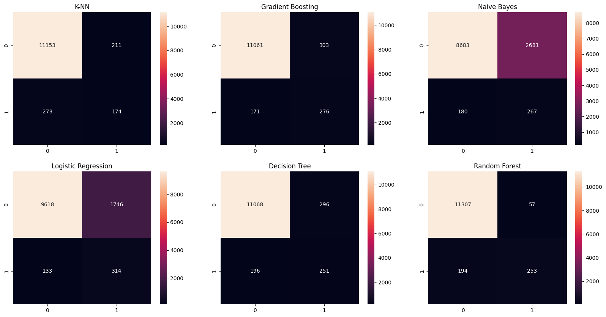

Load data#
import pandas as pd
data_fraud = pd.read_csv('../data/data_fraud_final.csv')
---------------------------------------------------------------------------
FileNotFoundError Traceback (most recent call last)
Cell In[1], line 3
1 import pandas as pd
----> 3 data_fraud = pd.read_csv('../data/data_fraud_final.csv')
File ~/miniconda3/envs/ml_venv/lib/python3.9/site-packages/pandas/io/parsers/readers.py:912, in read_csv(filepath_or_buffer, sep, delimiter, header, names, index_col, usecols, dtype, engine, converters, true_values, false_values, skipinitialspace, skiprows, skipfooter, nrows, na_values, keep_default_na, na_filter, verbose, skip_blank_lines, parse_dates, infer_datetime_format, keep_date_col, date_parser, date_format, dayfirst, cache_dates, iterator, chunksize, compression, thousands, decimal, lineterminator, quotechar, quoting, doublequote, escapechar, comment, encoding, encoding_errors, dialect, on_bad_lines, delim_whitespace, low_memory, memory_map, float_precision, storage_options, dtype_backend)
899 kwds_defaults = _refine_defaults_read(
900 dialect,
901 delimiter,
(...)
908 dtype_backend=dtype_backend,
909 )
910 kwds.update(kwds_defaults)
--> 912 return _read(filepath_or_buffer, kwds)
File ~/miniconda3/envs/ml_venv/lib/python3.9/site-packages/pandas/io/parsers/readers.py:577, in _read(filepath_or_buffer, kwds)
574 _validate_names(kwds.get("names", None))
576 # Create the parser.
--> 577 parser = TextFileReader(filepath_or_buffer, **kwds)
579 if chunksize or iterator:
580 return parser
File ~/miniconda3/envs/ml_venv/lib/python3.9/site-packages/pandas/io/parsers/readers.py:1407, in TextFileReader.__init__(self, f, engine, **kwds)
1404 self.options["has_index_names"] = kwds["has_index_names"]
1406 self.handles: IOHandles | None = None
-> 1407 self._engine = self._make_engine(f, self.engine)
File ~/miniconda3/envs/ml_venv/lib/python3.9/site-packages/pandas/io/parsers/readers.py:1661, in TextFileReader._make_engine(self, f, engine)
1659 if "b" not in mode:
1660 mode += "b"
-> 1661 self.handles = get_handle(
1662 f,
1663 mode,
1664 encoding=self.options.get("encoding", None),
1665 compression=self.options.get("compression", None),
1666 memory_map=self.options.get("memory_map", False),
1667 is_text=is_text,
1668 errors=self.options.get("encoding_errors", "strict"),
1669 storage_options=self.options.get("storage_options", None),
1670 )
1671 assert self.handles is not None
1672 f = self.handles.handle
File ~/miniconda3/envs/ml_venv/lib/python3.9/site-packages/pandas/io/common.py:859, in get_handle(path_or_buf, mode, encoding, compression, memory_map, is_text, errors, storage_options)
854 elif isinstance(handle, str):
855 # Check whether the filename is to be opened in binary mode.
856 # Binary mode does not support 'encoding' and 'newline'.
857 if ioargs.encoding and "b" not in ioargs.mode:
858 # Encoding
--> 859 handle = open(
860 handle,
861 ioargs.mode,
862 encoding=ioargs.encoding,
863 errors=errors,
864 newline="",
865 )
866 else:
867 # Binary mode
868 handle = open(handle, ioargs.mode)
FileNotFoundError: [Errno 2] No such file or directory: '../data/data_fraud_final.csv'
data_fraud.head()
| D1 | D4 | D5 | D6 | D8 | D10 | D13 | D15 | V12 | V30 | ... | M6_nan | M9_T | id_12_NotFound | id_31_chrome 64.0 for android | id_31_chrome generic | id_37_T | DeviceType_mobile | DeviceInfo_SM-A300H Build/LRX22G | DeviceInfo_hi6210sft Build/MRA58K | isFraud | |
|---|---|---|---|---|---|---|---|---|---|---|---|---|---|---|---|---|---|---|---|---|---|
| 0 | 14.0 | 88.931389 | 29.908723 | 30.726991 | 177.131369 | 13.000000 | -5.365878 | 0.000000 | 1.00000 | 0.000000 | ... | 0.0 | 0.0 | 0.0 | 0.0 | 0.0 | 0.0 | 0.0 | 0.0 | 0.0 | 0.0 |
| 1 | 0.0 | 0.000000 | 47.168517 | 56.969919 | 174.583114 | 0.000000 | 2.900229 | 0.000000 | 0.00000 | 0.000000 | ... | 0.0 | 0.0 | 0.0 | 0.0 | 0.0 | 0.0 | 0.0 | 0.0 | 0.0 | 0.0 |
| 2 | 0.0 | 0.000000 | 33.781705 | 34.646134 | 178.268862 | 0.000000 | -3.856653 | 315.000000 | 1.00000 | 0.000000 | ... | 0.0 | 0.0 | 0.0 | 0.0 | 0.0 | 0.0 | 0.0 | 0.0 | 0.0 | 0.0 |
| 3 | 112.0 | 94.000000 | 0.000000 | 12.142125 | 181.177056 | 84.000000 | -7.359038 | 111.000000 | 1.00000 | 0.000000 | ... | 0.0 | 0.0 | 0.0 | 0.0 | 0.0 | 0.0 | 0.0 | 0.0 | 0.0 | 0.0 |
| 4 | 0.0 | 245.284719 | 45.761553 | 73.034183 | 136.044491 | 53.717295 | 24.006143 | 53.966745 | 0.04481 | 0.306017 | ... | 1.0 | 0.0 | 1.0 | 0.0 | 0.0 | 1.0 | 1.0 | 0.0 | 0.0 | 0.0 |
5 rows × 59 columns
from collections import Counter
from imblearn.over_sampling import ADASYN
from sklearn.model_selection import train_test_split
data_fraud_sampled = data_fraud.sample(frac=0.1, random_state=42)
X, y = data_fraud_sampled.drop('isFraud', axis=1), data_fraud_sampled['isFraud']
X_train, X_test, y_train, y_test = train_test_split(X, y, test_size=0.2, random_state=42)
ada = ADASYN(random_state=42)
X_train_res, y_train_res = ada.fit_resample(X_train, y_train)
print('Original train dataset shape {}'.format(Counter(y_train)))
print('Resampled train dataset shape {}'.format(Counter(y_train_res)))
print('Test dataset shape {}'.format(Counter(y_test)))
Original train dataset shape Counter({0.0: 45581, 1.0: 1662})
Resampled train dataset shape Counter({0.0: 45581, 1.0: 45358})
Test dataset shape Counter({0.0: 11364, 1.0: 447})
Training#
Without hyperparametrization#
from sklearn.naive_bayes import BernoulliNB
from sklearn.tree import DecisionTreeClassifier
from sklearn.ensemble import RandomForestClassifier
from sklearn.ensemble import GradientBoostingClassifier
from sklearn.neighbors import KNeighborsClassifier
from sklearn.linear_model import LogisticRegression
dict_models = {
'Naive Bayes': BernoulliNB(),
'Decision Tree': DecisionTreeClassifier(random_state=42),
'Random Forest': RandomForestClassifier(random_state=42, n_estimators=50),
'Gradient Boosting': GradientBoostingClassifier(random_state=42, n_estimators=50),
'K-NN': KNeighborsClassifier(),
'Logistic Regression': LogisticRegression(random_state=42, max_iter=500)
}
from utils import model_evaluation_clf
from time import time
from copy import deepcopy
import warnings
warnings.filterwarnings("ignore")
results = pd.DataFrame(columns=["Model", "Accuracy", "Precision", "Recall", "f1-score", "AUC", "Training Time (s)"])
models = {}
models_res = {}
for i, model_name in enumerate(dict_models.keys()):
print('Training', model_name, end=' => ')
model = dict_models[model_name]
model_res = deepcopy(model)
start_time = time()
model.fit(X_train, y_train)
end_time = time()
start_time_res = time()
model_res.fit(X_train_res, y_train_res)
end_time_res = time()
models[model_name] = model
models_res[model_name + ' (res)'] = model_res
eval = model_evaluation_clf(model, X_test, y_test)
eval_res = model_evaluation_clf(model_res, X_test, y_test)
results.loc[2*i] = [model_name, eval['accuracy'], eval['precision'], eval['recall'], eval['f1'], eval['roc_auc'], round(end_time - start_time, 1)]
results.loc[2*i+1] = [model_name + ' (res)', eval_res['accuracy'], eval_res['precision'], eval_res['recall'], eval_res['f1'], eval_res['roc_auc'], round(end_time_res - start_time_res, 1)]
print(f"{round(sum([end_time - start_time, end_time_res - start_time_res]), 1)}s")
Training Naive Bayes => 0.1s
Training Decision Tree => 5.6s
Training Random Forest => 21.3s
Training Gradient Boosting => 59.2s
Training K-NN => 0.0s
Training Logistic Regression => 5.2s
results = results.sort_values(by='AUC', ascending=False)
print(results.to_string(index=False))
Model Accuracy Precision Recall f1-score AUC Training Time (s)
Gradient Boosting (res) 0.939 0.332 0.615 0.431 0.783 42.6
K-NN (res) 0.903 0.226 0.649 0.336 0.781 0.0
Random Forest (res) 0.980 0.851 0.562 0.677 0.779 13.8
Decision Tree 0.968 0.579 0.550 0.564 0.767 2.7
Decision Tree (res) 0.959 0.464 0.555 0.505 0.765 2.9
Logistic Regression (res) 0.787 0.114 0.685 0.196 0.738 4.1
Random Forest 0.977 0.916 0.438 0.593 0.718 7.4
Naive Bayes (res) 0.757 0.085 0.557 0.148 0.661 0.1
Naive Bayes 0.764 0.083 0.523 0.144 0.648 0.0
K-NN 0.966 0.632 0.262 0.370 0.628 0.0
Gradient Boosting 0.969 0.785 0.237 0.364 0.617 16.6
Logistic Regression 0.965 0.712 0.116 0.200 0.557 1.1
With hyperparametrization#
We had better results with the resampled data. For the hyperparametrization we only considered the resampled dataset.
from sklearn.preprocessing import StandardScaler, MinMaxScaler
from sklearn.naive_bayes import BernoulliNB
from sklearn.linear_model import LogisticRegression
from sklearn.tree import DecisionTreeClassifier
from sklearn.ensemble import RandomForestClassifier
from sklearn.ensemble import GradientBoostingClassifier
from sklearn.neighbors import KNeighborsClassifier
nb_col = X_train.shape[1]
dict_models = [
{
'name_clf' : 'K-NN',
'model': KNeighborsClassifier(n_neighbors=1),
'scalers' : {
'scaler': [MinMaxScaler()],
},
'grid' : {} # After some tries, we found that the best model is the one with n_neighbors=1
},
# {
# 'name_clf' : 'Gradient Boosting',
# 'model': GradientBoostingClassifier(random_state=42, n_estimators=50),
# 'scalers' : {
# 'scaler': [None],
# },
# 'grid' : {
# 'model__max_depth': [3, 4, 5],
# },
# },
{
'name_clf' : 'Gradient Boosting',
'model': GradientBoostingClassifier(random_state=42, n_estimators=50, max_depth=5),
'scalers' : {
'scaler': [None],
},
'grid' : {}, # After some tries, we found that the best model is the one with max_depth=5
},
{
'name_clf' : 'Naive Bayes',
'model': BernoulliNB(),
'scalers' : {
'scaler' : [None, MinMaxScaler(), StandardScaler()],
},
'grid' : {
'model__alpha': [10**k for k in range(-5, 6)],
},
},
{
'name_clf' : 'Logistic Regression',
'model': LogisticRegression(random_state=42, max_iter=1000),
'scalers' : {
'scaler': [StandardScaler()],
},
'grid' : {
'model__C': [0.1, 1, 10],
# 'model__penalty': ['l1', 'l2'],
'model__penalty': ['l2'],
},
},
{
'name_clf' : 'Decision Tree',
'model': DecisionTreeClassifier(random_state=42),
'scalers' : {
'scaler': [None],
},
'classifier__max_features': [1, 2, 3],
'grid' : {
'model__max_depth': list(range(1, nb_col + 1)),
},
},
{
'name_clf' : 'Random Forest',
'model': RandomForestClassifier(random_state=42, n_estimators=50),
'scalers' : {
'scaler': [None],
},
'grid' : {
'model__max_depth': list(range(1, nb_col + 1, 5)),
},
},
]
The data is shuffled with the sample (frac=1) so we have eliminated every tendancy. Finding the best parameters alreday require a lot of time beacause of the high amount of data and the use of a cross validation is useless thanks to the shuffle. We choose not to use any cross validation.
from sklearn.pipeline import Pipeline
from skopt import BayesSearchCV
from sklearn.model_selection import GridSearchCV
from time import time
from utils import model_evaluation_clf
from copy import deepcopy
import warnings
warnings.filterwarnings("ignore")
results = pd.DataFrame(columns=["Model", "Accuracy", "Precision", "Recall", "f1-score", "AUC", "Training Time (s)"])
models_bayes = {}
models_gs = {}
nb_res = 0
for i, dict_clf in enumerate(dict_models):
model_name_gs = dict_clf['name_clf']
model_name_bayes = model_name_gs + ' (Bayes)'
print(f'Training {model_name_gs}')
model = dict_clf['model']
steps_gs = [
('scaler', None),# if dict_clf['scalers'] is not None else 'passthrough',
('model', model),
]
steps_bayes = [
('scaler', None),# if dict_clf['scalers'] is not None else 'passthrough',
('model', deepcopy(model)),
]
pipeline_gs = Pipeline(steps_gs)
pipeline_bayes = Pipeline(steps_bayes)
param_grid = {
**dict_clf['scalers'],
**dict_clf['grid']
}
clf_gs = GridSearchCV(pipeline_gs, param_grid=param_grid, n_jobs=-1)
clf_bayes = BayesSearchCV(pipeline_bayes, search_spaces=param_grid, n_jobs=-1, n_iter=1)
start_time_gs = time()
clf_gs.fit(X_train_res, y_train_res)
end_time_gs = time()
start_time_bayes = time()
clf_bayes.fit(X_train_res, y_train_res)
end_time_bayes = time()
print(f"Best GridSearchCV params {model_name_gs}: \n{clf_gs.best_params_}")
print(f"Best BayesSearchCV params {model_name_bayes}: \n{clf_bayes.best_params_}")
eval_gs = model_evaluation_clf(clf_gs, X_test, y_test)
eval_bayes = model_evaluation_clf(clf_bayes, X_test, y_test)
models_gs[model_name_gs] = clf_gs
models_bayes[model_name_bayes] = clf_bayes
results.loc[nb_res] = [model_name_gs, eval_gs['accuracy'], eval_gs['precision'], eval_gs['recall'], eval_gs['f1'], eval_gs['roc_auc'], round(end_time_gs - start_time_gs, 1)]
results.loc[nb_res+1] = [model_name_bayes, eval_bayes['accuracy'], eval_bayes['precision'], eval_bayes['recall'], eval_bayes['f1'], eval_bayes['roc_auc'], round(end_time_bayes - start_time_bayes, 1)]
nb_res += 2
print(f"Training time: {round(sum([end_time_gs - start_time_gs, end_time_bayes - start_time_bayes]), 1)}s")
print()
Training K-NN
Best GridSearchCV params K-NN:
{'scaler': MinMaxScaler()}
Best BayesSearchCV params K-NN (Bayes):
OrderedDict([('scaler', MinMaxScaler())])
Training time: 34.2s
Training Gradient Boosting
Best GridSearchCV params Gradient Boosting:
{'scaler': None}
Best BayesSearchCV params Gradient Boosting (Bayes):
OrderedDict([('scaler', None)])
Training time: 329.6s
Training Naive Bayes
Best GridSearchCV params Naive Bayes:
{'model__alpha': 1e-05, 'scaler': StandardScaler()}
Best BayesSearchCV params Naive Bayes (Bayes):
OrderedDict([('model__alpha', 0.0001), ('scaler', MinMaxScaler())])
Training time: 24.1s
Training Logistic Regression
Best GridSearchCV params Logistic Regression:
{'model__C': 0.1, 'model__penalty': 'l2', 'scaler': StandardScaler()}
Best BayesSearchCV params Logistic Regression (Bayes):
OrderedDict([('model__C', 1), ('model__penalty', 'l2'), ('scaler', StandardScaler())])
Training time: 8.4s
Training Decision Tree
Best GridSearchCV params Decision Tree:
{'model__max_depth': 23, 'scaler': None}
Best BayesSearchCV params Decision Tree (Bayes):
OrderedDict([('model__max_depth', 58), ('scaler', None)])
Training time: 98.2s
Training Random Forest
Best GridSearchCV params Random Forest:
{'model__max_depth': 21, 'scaler': None}
Best BayesSearchCV params Random Forest (Bayes):
OrderedDict([('model__max_depth', 56), ('scaler', None)])
Training time: 129.3s
results = results.sort_values(by='AUC', ascending=False)
print(results.to_string(index=False))
Model Accuracy Precision Recall f1-score AUC Training Time (s)
Gradient Boosting 0.960 0.477 0.617 0.538 0.795 163.7
Gradient Boosting (Bayes) 0.960 0.477 0.617 0.538 0.795 165.9
Random Forest 0.979 0.816 0.566 0.668 0.780 97.6
Random Forest (Bayes) 0.980 0.851 0.562 0.677 0.779 31.7
Logistic Regression 0.841 0.152 0.702 0.250 0.774 5.0
Logistic Regression (Bayes) 0.842 0.152 0.698 0.250 0.773 3.4
Decision Tree 0.958 0.459 0.562 0.505 0.768 90.3
Decision Tree (Bayes) 0.959 0.464 0.555 0.505 0.765 7.8
K-NN 0.959 0.452 0.389 0.418 0.685 17.0
K-NN (Bayes) 0.959 0.452 0.389 0.418 0.685 17.2
Naive Bayes 0.758 0.091 0.597 0.157 0.681 23.1
Naive Bayes (Bayes) 0.760 0.086 0.559 0.150 0.663 1.1
import matplotlib.pyplot as plt
import seaborn as sns
from sklearn.metrics import confusion_matrix
fig, axs = plt.subplots(2, 3, figsize=(20, 10))
for i, model_name in enumerate(models_gs.keys()):
model = models_gs[model_name]
y_pred = model.predict(X_test)
cm = confusion_matrix(y_test, y_pred)
sns.heatmap(cm, annot=True, fmt='d', ax=axs[i//3, i%3])
axs[i//3, i%3].set_title(model_name)
plt.show()

from sklearn.metrics import roc_curve
from matplotlib import pyplot as plt
fig, axs = plt.subplots(2, 3, figsize=(20, 10))
for i, model_name in enumerate(models_gs.keys()):
model = models_gs[model_name]
y_pred = model.predict_proba(X_test)[:, 1]
fpr, tpr, _ = roc_curve(y_test, y_pred)
axs[i//3, i%3].plot(fpr, tpr)
axs[i//3, i%3].set_title(model_name)
plt.show()

The roc curves show that except K-NN and decision tree, the models have a low rate of false positives and a high of true positives.